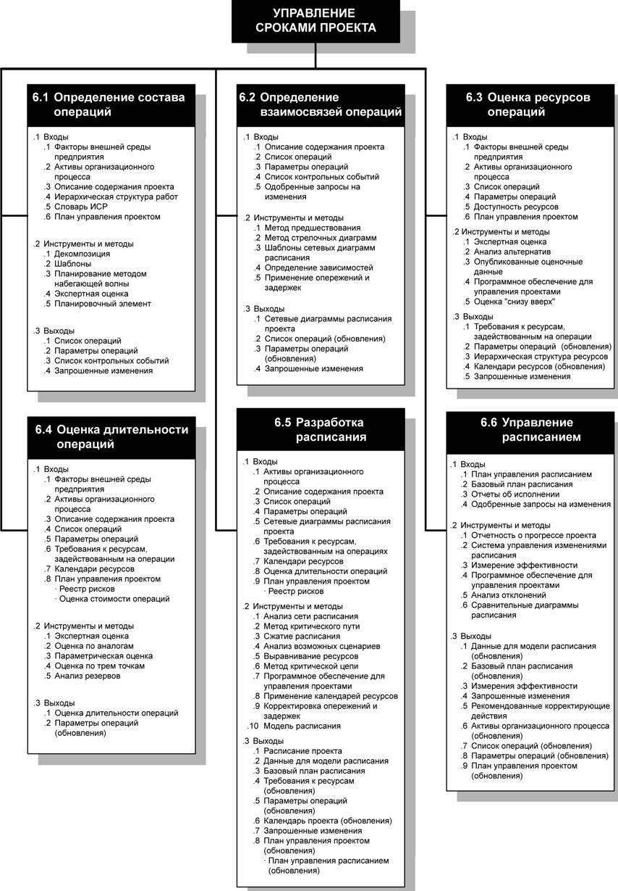
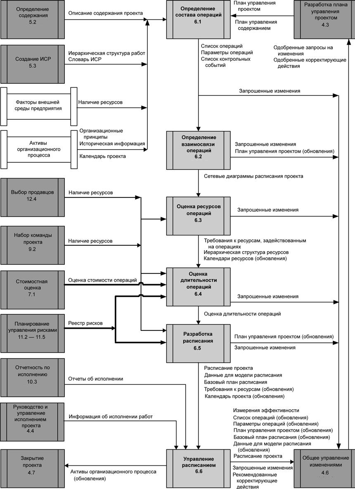

Введение
Управление сроками проекта включает в себя процессы, обеспечивающие своевременное завершение проекта. На рис. 8.1 приведена общая схема процессов управления сроками проекта, а на рис. 8.2 - диаграмма зависимостей для этих процессов с их входами, выходами и прочими процессами в области знаний. Процессы управления сроками проекта включают в себя следующее:
6.1 Определение состава операций - определение конкретных плановых операций, которые необходимо выполнить для получения различных результатов поставки проекта.
6.2 Определение взаимосвязей операций - выявление и документирование зависимостей между плановыми операциями.
6.3 Оценка ресурсов операции - оценка типов и количества ресурсов, необходимых для выполнения каждой плановой операции.
6.4 Оценка длительности операций - оценка количества рабочих периодов, необходимых для выполнения отдельных операций.
6.5 Разработка расписания - составление расписания проекта с учетом последовательностей операций, их длительности, требований к ресурсам и ограничений на сроки.
6.6 Управление расписанием - управление изменениями расписания проекта.
Эти процессы взаимодействуют друг с другом, а также с процессами из других областей знаний. Каждый процесс может включать в себя действия одного или нескольких лиц или групп лиц, в зависимости от потребностей проекта. Каждый процесс происходит в каждом проекте как минимум один раз и в одной или нескольких фазах проекта, если проект разбит на фазы. Хотя процессы представлены в виде дискретных элементов с четко выделяемыми границами, на практике они могут накладываться друг на друга.

Рисунок 8.1 - Общая схема процессов управления сроками проекта

Рисунок 8.2 - Диаграмма зависимостей процессов для управления сроками проекта